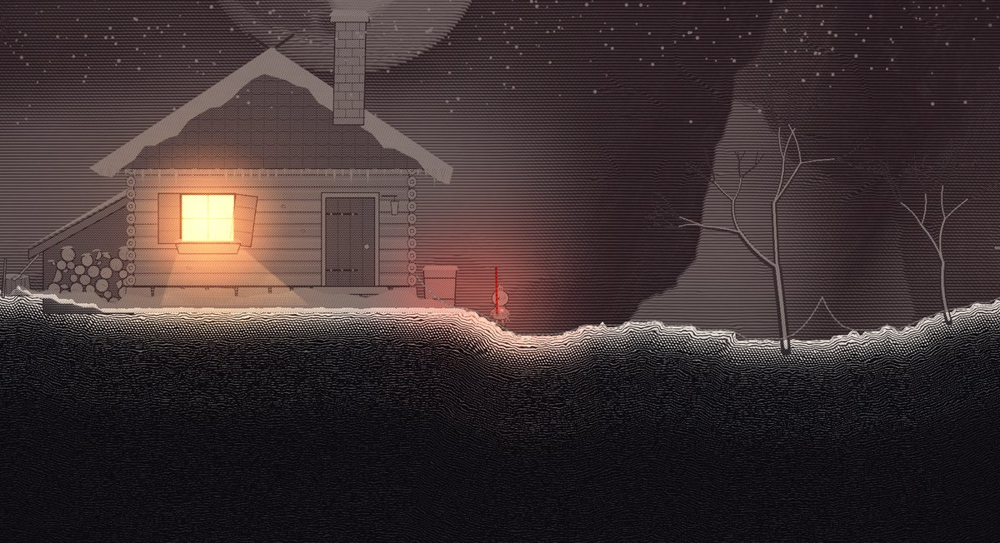
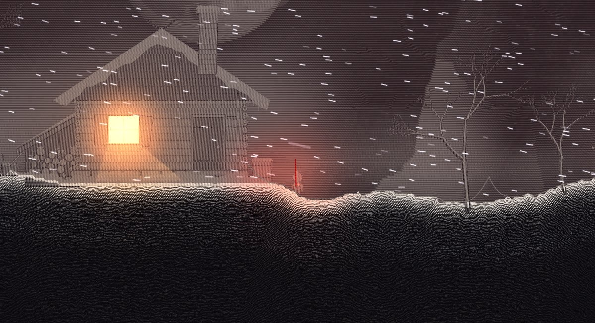
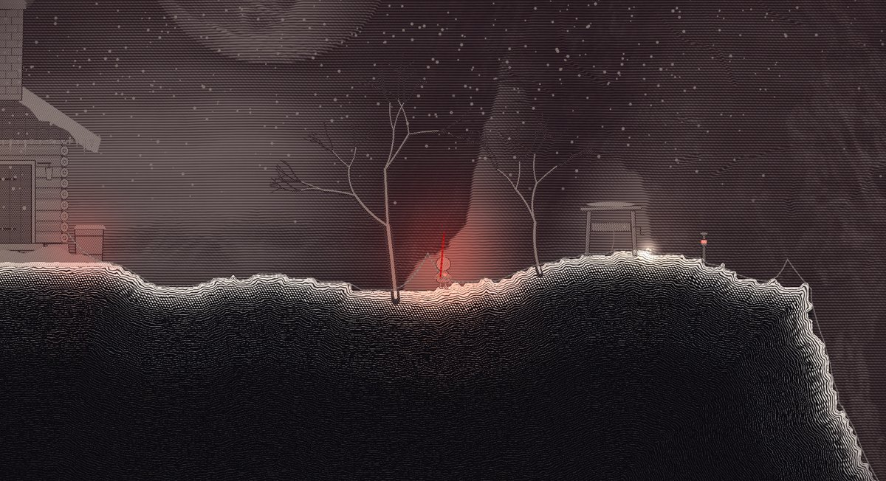
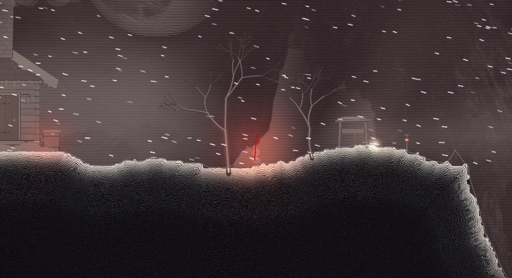
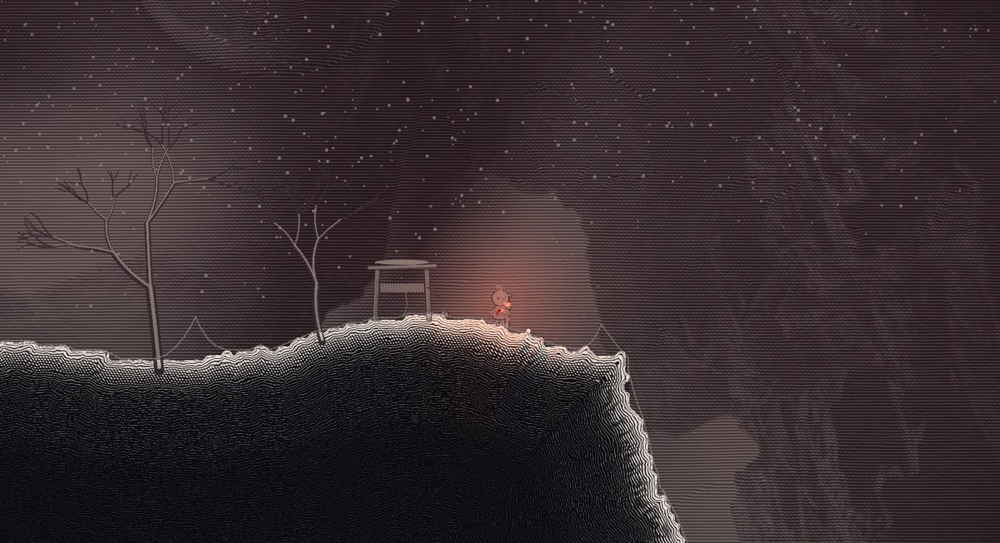
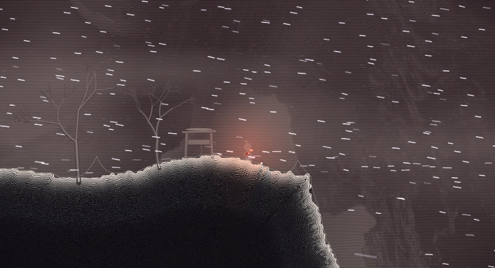
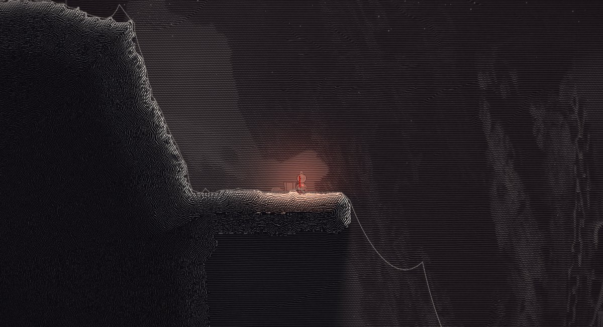

A blizzard on the Brinkand dead calm a few metres down
The surface is now in a snowstorm: wind-driven snow in three layers, gusts that come and go, snow torn off the ground, and white sheets of blown snow crossing the view. Trees bend and the chimney smoke streams sideways. A few metres into the pit, all of it stops. The wind sound fades to a faint moan, and only a few stray flakes drift straight down.
Outside
There should be a clear distinction between the ambience outside and in the caves: a snowstorm outside.


BeforeAfter
Drag the thread to compare


BeforeAfter
Drag the thread to compare
Three layers of snow. A far curtain of fine flakes moves slower than the play area, which gives the storm depth. The main layer flies past as streaks along the wind. A few large flakes rush by right in front of the lens, but only over open sky, never across the rock.
Gusts. The wind never stops, but it rises and falls between about 3 and 13 m/s on overlapping slow cycles, so it doesn't repeat in an obvious rhythm. Everything follows it: how fast the snow flies, how far the trees bend, how thick the haze gets, and how loud the wind is.
Spindrift. In the strong gusts, snow is torn off the ground and skims along just above it.
Whiteout. Big soft sheets of blown snow drift across the Brink, most behind the play area and one in front. In a gust the whole view greys out a little.
Flakes catch the light. Each flake has a faint cold glint, so the storm still reads against the dark sky.
The world reacts. The trees bend downwind from the root up and shiver in the gusts. The chimney smoke streams sideways, and the yarn tuft on the doll's head blows back.
The edge of the pit


BeforeAfter
Drag the thread to compare
The storm fades by height, not by area. It's at full strength on the surface and dies away over the first few metres down the Throat. Climbing down out of the wind feels like stepping indoors.
Inside

BeforeAfter
Drag the thread to compare
Still air. Below the lip, only a few flakes that blew over the edge drift straight down, slowly, and they thin out as you go deeper. In the deeper caves there's only slow dust, as before.
Sound. The wind used to be one fixed volume per area. It now follows the storm: loud and gusting on the Brink, with its pitch rising in the gusts. In the Throat it drops to a faint moan, and below the Throat it's gone. The Throat's cave echo and drips are a little louder to fill the space.
Where it is
The storm is in ambientFx and drawFog in app/src/draw.js. The wind sound is in Audio.update in app/src/audio.js.
The snow is drawn in batches (one stroke per layer and brightness band), so well over a thousand flakes on screen cost only a handful of draw calls.
Not checked:
The wind sound itself. The mix was changed in code and the game loads all its sounds without errors, but I can't listen to it.
Frame rate on your machine with the storm running. The screenshots above were rendered without problems.